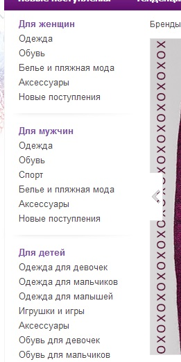
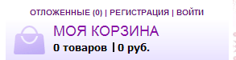
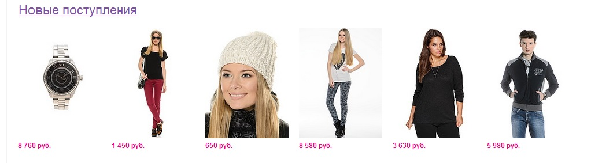
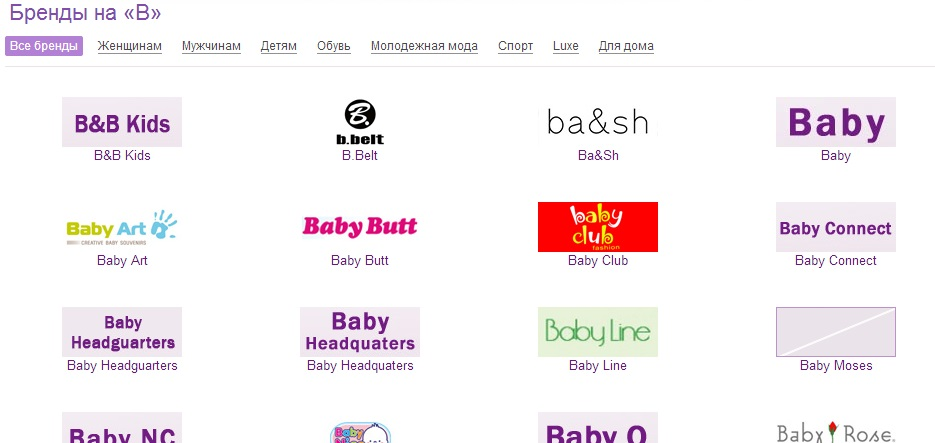
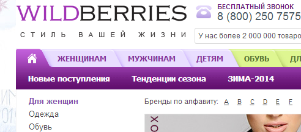
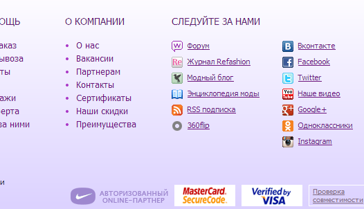

Анализ сайта
http://www.wildberries.ru/
1. Первым делом в глаза бросается анимированный рекламный баннер, занимающий около 50% страницы.
2. Основные категории продукции невозможно просмотреть без использования прокрутки.

3. Блок с корзиной вне доработан, вместо значка корзины отображается дамская сумочка.

4. В блоке «Новые поступления» цены расположены как бы отдельно от предлагаемой продукции. Цвет стоимости товаров сливается с фоном сайта.

5. В разделе выбора брэндов выбрана одна цветовая гамма. Страница не читабельна.

6. При переходе по разделам нет возможности определить в каком именно разделе сейчас находится пользователь.
7. Переход на главную страницу не проработан. Ссылка для перехода не подписана и имеет только визуальное оформление.

8. Наиболее важная контактная информация (телефоны, email и icq) расположены в самом низу страницы. Чтобы увидеть ее, пользователь должен полностью прокрутить всю страницу. Не понятно какая организация осуществляет продажу товара.
